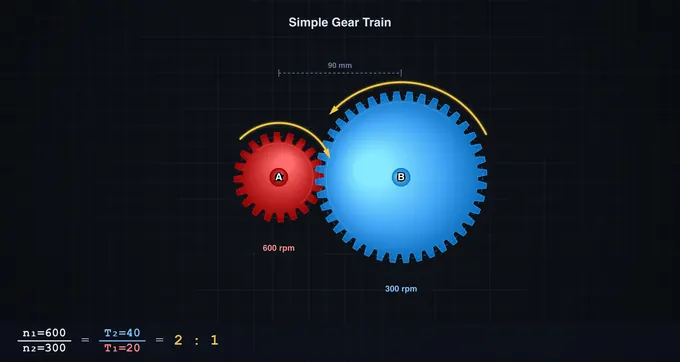
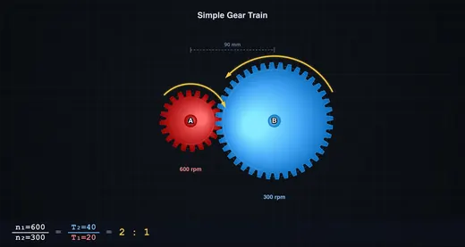

Gear Train Calculator
Gear Ratio • RPM • Torque — Simple • Compound • Worm — Simulate • Explore • Practice • Quiz
Display Controls
Σ Live equations — values substituted from current state
⚡ Power flow — speed × torque conservation across the train
📈 Time history — rolling output speed & torque
💡 What-if coach — insights from the current configuration
1 Overview
The Gear Train Calculator is an interactive simulator for understanding how gears transmit motion and power. It covers simple, idler, compound, and worm gear trains with animated meshing gears and real-time calculations of gear ratio, output RPM, torque (including realistic efficiency losses), module, and pitch circle diameter.
Directions of rotation are shown by yellow arrows on every gear, centre-distance dimension lines are drawn between mating pairs, and an undercut warning badge flags any gear with fewer than 17 teeth. A full suite of display toggles, a Play/Pause control, an Animation Speed slider, and an SI / Imperial unit toggle are provided for study and comparison.
2 Controls and Getting Started
The simulator opens in Simulate mode with a 2:1 simple gear train at 600 rpm input. Every slider has a paired numeric input so you can dial in exact values.
- Train Type: Simple, Idler, Compound, or Worm.
- Teeth A / B: 10–60 (for Worm, "Teeth A" becomes Worm Starts 1–4).
- Teeth C / D (Compound only): second stage.
- Idler Teeth (Idler only): the middle gear — changes direction, not ratio.
- Module: 1–10 mm — changes physical tooth size and PCD live.
- Input RPM: 1–1200 rpm.
- Power: 0.1–20 kW — feeds the input-torque calculation.
- Worm Efficiency (Worm only): 40–90 % — applied to output torque.
- Presets: Speed Reducer 3:1, Speed Multiplier 1:3, Clock Mechanism, Worm Drive 40:1.
3 Playback, Toggles, and Units
Below the main sliders is a playback row. Play/Pause freezes the animation so you can study rotation direction without motion, and Animation Speed (0.1×–2×) scales the visible rotation without altering the RPM calculation.
Five display toggles control canvas clutter:
- Pitch — dashed pitch circles.
- Dims — centre-distance dimension lines.
- Arrows — rotation-direction arrows on every gear.
- Labels — letter labels (A, B, C, D, I) at gear centres.
- Grid — workshop grid background.
The SI / Imperial pill tabs in the header convert displayed lengths (mm ⇔ inch) and torques (Nm ⇔ lbf·ft) without changing any internal calculation. RPM is unitless.
4 Reading the Canvas
Each gear is rendered with radial-gradient shading and a rounded tooth profile. The blue/green/gold colours match the readout badges and the canvas labels. A subtle yellow glow marks the mesh-contact point on the line joining each pair of pitch circles.
Rotation arrows follow the physical direction: in a simple train A and B are opposite; in an idler train the middle gear flips direction so A and B spin the same way (ratio unchanged); in a compound train A=CW, B=CCW, C=CCW (shared shaft with B), D=CW; in a worm drive the wheel spins once per Nwheel / starts turns of the worm.
5 Show Calculations, Export, and Right-click Menu
Click the blue Show Calculations button on the canvas to open a modal that derives gear ratio, output RPM, input torque, and output torque step by step, with all intermediate values in SI units.
The PNG and CSV buttons export the current canvas image and a readout table respectively. Right-click (or long-press on touch) inside the canvas to open a context menu with the same Export PNG, Export CSV, Copy readouts, Show calculations, Toggle grid, and Reset to default commands.
The Reset to default action restores Simple train, 20T × 40T, 3 mm module, 600 rpm, 2 kW — useful after experimenting.
6 Explore, Practice, Quiz
Explore covers 12 concepts across Basics (gear ratio, module, circular/diametral pitch), Types (spur, helical, bevel, worm), and Applications (speed reducers, compound trains, planetary, rack & pinion). Practice generates random numerical problems with step-by-step solutions. Quiz delivers 5 randomised questions per session.
7 Tips & Best Practices
- Gear ratio > 1 means speed reduction (torque multiplication); < 1 means speed increase.
- For compound trains, overall ratio = (NB/NA) × (ND/NC) — compact way to achieve large ratios.
- An idler reverses direction but not the magnitude of the ratio.
- Worm drives with 1–2 starts are usually self-locking; with 3–4 starts they often are not — check the “Self-locking” badge on the canvas.
- If a gear has fewer than 17 teeth at 20° pressure angle, the undercut warning appears — consider increasing the tooth count or using a profile-shift design in practice.
- Use Pause + Animation Speed together to step through meshing cycles slowly.
Gear Train Calculator — Understanding Gear Ratios, RPM and Torque

A gear train transmits rotation and torque between shafts through meshing gears. The gear ratio (GR = NB/NA) decides the trade-off: a ratio above one cuts speed and multiplies torque (reducer), a ratio below one does the reverse (multiplier). This calculator animates simple, idler, compound, and worm trains, and solves ratio, RPM, and torque for each.
Gear Train Parameters at a Glance
| Parameter | Formula | Typical Range | Unit |
|---|---|---|---|
| Gear ratio (simple) | NB / NA | 0.5 – 10 | :1 |
| Compound ratio | (NB/NA) × (ND/NC) | 2 – 100 | :1 |
| Worm ratio | Nwheel / Nstarts | 10 – 80 | :1 |
| Output RPM | RPMin / GR | 1 – 1200 | rpm |
| Output torque | Tin × GR × η | 0.1 – 1000 | Nm |
| Module | d / N | 1 – 10 | mm |
| Pitch circle dia. | m × N | 10 – 600 | mm |
| Centre distance | (dA + dB) / 2 | — | mm |

Types of Gear Trains
Simple gear trains consist of two meshing gears on separate shafts and provide a single-stage speed change. A simple train with an idler inserts a third gear that reverses direction twice so output spins the same way as input — the ratio magnitude is unchanged. Compound gear trains use four gears sharing an intermediate shaft, giving GR = (NB/NA) × (ND/NC). Worm drives mesh a screw-like worm (with 1–4 starts) against a worm wheel, achieving very high ratios in one stage and usually self-locking when starts ≤ 2.
Key Formulas and Realistic Efficiency
The module (m) relates tooth size to gear diameter: m = d / N. The circular pitch is p = π × m, and both meshing gears must share the same module. The centre distance between spur gears equals (dA + dB) / 2. Output RPM is RPMin / GR. Output torque is Tin × GR × η, where η is the transmission efficiency — roughly 97 % for spur and compound trains and 40–90 % for worm drives depending on lead angle and lubrication (this simulator defaults worm efficiency to 70 %, adjustable on the slider).
How to Use This Simulator
Pick a Train Type (Simple, Idler, Compound, or Worm) and adjust Teeth, Module, Input RPM (1–1200), and Power (kW) sliders — each has a paired numeric input for exact values. For worm drives, set the number of starts (1–4) and tune the efficiency. The canvas animates the mesh with correct rotation directions indicated by yellow arrows on every gear, and an undercut warning appears when any gear has fewer than 17 teeth (risk of tooth interference at 20° pressure angle). Use Play/Pause and Animation Speed to slow down or freeze the motion, and the display toggles (Pitch, Dims, Arrows, Labels, Grid) to declutter. Click Show Calculations to see step-by-step derivations, or right-click the canvas for Export PNG/CSV and reset shortcuts. Toggle SI/Imperial in the header to switch length and torque units (mm ⇔ inch, Nm ⇔ lbf·ft).
Worked Compound Train — 60T → 20T on the Same Shaft as 80T → 25T
A two-stage compound reduction is the most common workshop layout: motor drives gear A; gear B is on the same shaft as A’s mesh partner; B drives the output gear C. Take A=60, intermediate input=20, intermediate output=80, output=25 teeth. Motor runs at 1500 rpm delivering 5 kW.
| Stage | Equation | Working | Result |
|---|---|---|---|
| Stage 1 ratio (60T driving 20T) | i1 = Tdriven/Tdriver | 20/60 | 0.333 (speed increases) |
| Stage 2 ratio (80T driving 25T) | i2 = Tdriven/Tdriver | 25/80 | 0.3125 |
| Overall train ratio | i = i1 × i2 | 0.333 × 0.3125 | 0.104 (1 : 9.6 reduction) |
| Output speed | nout = nin/9.6 | 1500/9.6 | 156 rpm |
| Input torque (from P = Tω) | Tin = P/(2πnin/60) | 5000/(157) | 31.8 N·m |
| Output torque (ideal) | Tout = Tin × 9.6 | 31.8 × 9.6 | 305 N·m |
| Output torque (real, η = 0.94 per stage) | Tout × η1 × η2 | 305 × 0.94 × 0.94 | 270 N·m |
The simulator displays both ideal and efficiency-adjusted torque. For spur gears, well-meshed and well-lubricated, each stage is typically 96−99% efficient; for worm drives it falls to 50−90% depending on the lead angle and surface finish.
Undercutting and Interference — Why Small Gears Misbehave
For a standard 20° pressure-angle involute gear, the minimum number of teeth without interference is 17. Below this, the generating tool gouges into the dedendum of the gear — undercutting — weakening the tooth root and shortening the contact ratio. The simulator flashes a warning whenever any gear in your train falls below 17 T. Practical responses:
- Raise the pressure angle. A 25° profile drops the minimum to about 12 T; this is standard practice in helicopter gearboxes and aerospace drives where tooth count is constrained.
- Use profile shift. Adjusting the rack centre relative to the gear centre by a coefficient x of the module gives a positively shifted (“corrected”) gear with thicker root teeth; in mass-produced metric gears this is signalled as “x = +0.5” on the drawing.
- Switch to non-standard profiles. Cycloidal profiles (clock gears) and Wildhaber-Novikov circular-arc profiles avoid the involute interference geometry entirely but require purpose-built cutters.
Backlash — The Hidden Gap That Matters for Precision
Backlash is the angular play between mating teeth when the driving gear suddenly reverses. It is essential (without it, thermal expansion or lubricant film thickness could cause a jam) but unwelcome in precision drives. Typical values from ISO 1328-1:2013:
| Quality grade | Application | Typical circumferential backlash |
|---|---|---|
| ISO 4–6 | Aerospace, machine-tool spindles | 5–30 µm |
| ISO 7 | Industrial gearboxes | 30–100 µm |
| ISO 8–10 | Commercial drives, vehicle transmissions | 100–300 µm |
| ISO 11–12 | Low-cost open drives | 300+ µm |
CNC indexing tables and robot wrist drives use anti-backlash gear pairs or planetary harmonic drives because backlash directly limits positioning accuracy. A 50 µm backlash at the output of a 100 mm radius pinion is 0.029° of angular play — tiny in human terms, but unacceptable for laser cutting positioning.
How a Gear is Actually Specified — Module, Pitch, and Tooth Form
Drafting a gear requires more than tooth count. The core dimensions:
- Module m (metric standard) — m = pitch diameter / number of teeth, in mm. Standard modules: 1, 1.25, 1.5, 2, 2.5, 3, 4, 5 mm (ISO 54).
- Diametral pitch Pd (imperial) — Pd = number of teeth / pitch diameter in inches. Inverse of module.
- Pressure angle α — the angle of the line of action; almost universally 20° for industrial use, 14.5° on older equipment, 25° in heavy-duty.
- Face width b — usually 8–12 × module for stable load distribution.
- Helix angle β — 0° for spur gears, 15–30° for helical gears (quieter, higher load capacity, but generates axial thrust).
Two gears mesh only if their modules and pressure angles match. Different tooth counts are fine — that is how you change the ratio.
Standards and References
- Shigley, J. E. & Mischke, C. R. — Mechanical Engineering Design, 10th ed., Chapters 13 (Gears — General) and 14 (Spur and Helical Gears).
- Norton, R. L. — Machine Design: An Integrated Approach, 6th ed., Chapter 12 (Gears).
- ISO 1328-1:2013 — Cylindrical gears — ISO system of flank tolerance classification — Part 1: Definitions and allowable values of deviations relevant to flanks of gear teeth.
- ISO 6336 (multi-part) — Calculation of load capacity of spur and helical gears.
- AGMA 2001-D04 (USA) — Fundamental Rating Factors and Calculation Methods for Involute Spur and Helical Gear Teeth.
Explore Related Simulators
If you found this Gear Trains simulator helpful, explore our Belt & Chain Drive simulator, Four-Bar Linkage simulator, Cam & Follower simulator, Power Screw Calculator, and Governor simulator for more hands-on practice.